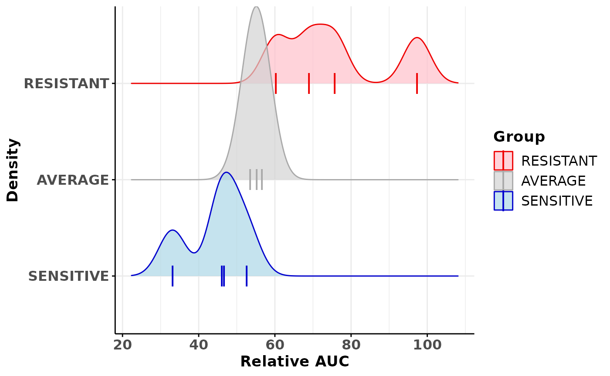

vignettes/OrganoidsToolBox.Rmd
OrganoidsToolBox.Rmd
Package: OrganoidsToolBox
Authors: Pascal Belleau [aut] (https://orcid.org/0000-0002-0802-1071), Astrid Deschênes
[cre, aut] (https://orcid.org/0000-0001-7846-6749), Amber Habowski
[dtc], David A. Tuveson [fnd] (https://orcid.org/0000-0002-8017-2712), Alexander
Krasnitz [fnd, aut]
Version: 0.0.1
Compiled date: 2022-10-18
License: Artistic-2.0
The OrganoidsToolBox
package and the underlying OrganoidsToolBox
code are distributed under
the Artistic-2.0 license. You are free to use and redistribute this
software.
If you use the OrganoidsToolBox package for a publication, we would ask you to cite the following:
TODO
To install the latest version accessible on the OrganoidsToolBox Github Website, the devtools package is required.
## Load required package
library(devtools)
## Install the latest version of OrganoidsToolBox
devtools::install_github('KrasnitzLab/OrganoidsToolBox')## Column1 organoid_id plate passage_number timestamp study screen_type
## 1 1 hT1001 Plate1 P16 2/2/1988 MEGA-TEST TEST-01
## 2 2 hT1001 Plate1 P16 2/2/1988 MEGA-TEST TEST-01
## 3 3 hT1001 Plate1 P16 2/2/1988 MEGA-TEST TEST-01
## 4 4 hT1001 Plate1 P16 2/2/1988 MEGA-TEST TEST-01
## 5 5 hT1001 Plate1 P16 2/2/1988 MEGA-TEST TEST-01
## 6 1 hT1001 Plate1 P16 2/2/1988 MEGA-TEST TEST-01
## z_prime drug_a drug_b drug_c drug_background dosage_type
## 1 0.2732018 Methotrexate N/A N/A N/A Averaged
## 2 0.2732018 Methotrexate N/A N/A N/A Averaged
## 3 0.2732018 Methotrexate N/A N/A N/A Averaged
## 4 0.2732018 Methotrexate N/A N/A N/A Averaged
## 5 0.2732018 Methotrexate N/A N/A N/A Averaged
## 6 0.2732018 Methotrexate N/A N/A N/A Averaged
## dosage_concentration_a dosage_concentration_b dosage_concentration_c
## 1 -2.1481304 0 0
## 2 -1.8477117 0 0
## 3 -1.3027707 0 0
## 4 -0.7495800 0 0
## 5 -0.1481304 0 0
## 6 0.3961993 0 0
## dosage_concentration_background percent_viability ic50 auc
## 1 0 81.64214 1.072243 218.0053
## 2 0 89.92993 1.072243 218.0053
## 3 0 75.73226 1.072243 218.0053
## 4 0 57.93407 1.072243 218.0053
## 5 0 71.17445 1.072243 218.0053
## 6 0 43.70780 1.072243 218.0053
## relative_auc
## 1 52.61044
## 2 52.61044
## 3 52.61044
## 4 52.61044
## 5 52.61044
## 6 52.61044
## Load drug screen dataset for 1 drug
data(drugScreening)
## Calculate the extreme organoids for the methotrexate drug screening
## using a quantile of 1/3
results <- getClassOneDrug(drugScreening=drugScreening,
drugName="Methotrexate", study="MEGA-TEST", screenType="TEST-01",
doseType="Averaged", quantile=1/3)
## Create a density plot where drug sensitivity groups are split
densityGraph <- plotDrugAUCDensityCurve(results, byGroup=TRUE)
densityGraph## Picking joint bandwidth of 3.58
Here is the output of sessionInfo() on the system on
which this document was compiled:
## R version 4.2.1 (2022-06-23)
## Platform: x86_64-pc-linux-gnu (64-bit)
## Running under: Ubuntu 20.04.4 LTS
##
## Matrix products: default
## BLAS: /usr/lib/x86_64-linux-gnu/openblas-pthread/libblas.so.3
## LAPACK: /usr/lib/x86_64-linux-gnu/openblas-pthread/liblapack.so.3
##
## locale:
## [1] LC_CTYPE=en_US.UTF-8 LC_NUMERIC=C
## [3] LC_TIME=en_US.UTF-8 LC_COLLATE=en_US.UTF-8
## [5] LC_MONETARY=en_US.UTF-8 LC_MESSAGES=en_US.UTF-8
## [7] LC_PAPER=en_US.UTF-8 LC_NAME=C
## [9] LC_ADDRESS=C LC_TELEPHONE=C
## [11] LC_MEASUREMENT=en_US.UTF-8 LC_IDENTIFICATION=C
##
## attached base packages:
## [1] stats graphics grDevices utils datasets methods base
##
## other attached packages:
## [1] OrganoidsToolBox_0.0.1 knitr_1.40 BiocStyle_2.24.0
##
## loaded via a namespace (and not attached):
## [1] highr_0.9 pillar_1.8.1 bslib_0.4.0
## [4] compiler_4.2.1 BiocManager_1.30.18 jquerylib_0.1.4
## [7] tools_4.2.1 digest_0.6.29 tibble_3.1.8
## [10] jsonlite_1.8.2 evaluate_0.17 memoise_2.0.1
## [13] lifecycle_1.0.3 gtable_0.3.1 pkgconfig_2.0.3
## [16] rlang_1.0.6 cli_3.4.1 yaml_2.3.5
## [19] pkgdown_2.0.6 xfun_0.33 fastmap_1.1.0
## [22] stringr_1.4.1 vctrs_0.4.2 desc_1.4.2
## [25] fs_1.5.2 sass_0.4.2 S4Vectors_0.34.0
## [28] systemfonts_1.0.4 stats4_4.2.1 rprojroot_2.0.3
## [31] grid_4.2.1 glue_1.6.2 R6_2.5.1
## [34] textshaping_0.3.6 fansi_1.0.3 rmarkdown_2.17
## [37] bookdown_0.29 farver_2.1.1 purrr_0.3.5
## [40] ggplot2_3.3.6 magrittr_2.0.3 ggridges_0.5.4
## [43] scales_1.2.1 htmltools_0.5.3 BiocGenerics_0.42.0
## [46] colorspace_2.0-3 labeling_0.4.2 ragg_1.2.3
## [49] utf8_1.2.2 stringi_1.7.8 munsell_0.5.0
## [52] cachem_1.0.6